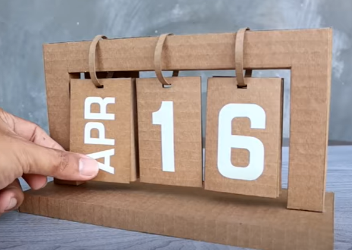

Calendario de Cartón
Para esta manualidad lo único que necesitas es:
- Cartón
- 3 cartulinas
- Colbon y silicona
- Hojas blancas o pintura blanca
- Tijeras
- Regla
Pasos para la elaboración de del calendario
- Cortar dos trozos de cartón de 25cm x 9cm y pegarlos uno encima del otro para crear la base del calendario.
- Cortar cuatro trozos de cartón de 23.5cm x 12.5cm. En el ancho del cartón, recortar 2.5cm dejando un espacio en forma de “c” en la mitad.
- Pegar estos trozos de cartón unos encima de otros.
- Crea 32 fichas de cartulina de 10cm x 7.5 cm. Estas fichas contendrán el mes y el día.
- Hacer un ligero agujero en la parte superior de cada ficha utilizando un abre huecos. Esto permitirá colgar las fichas en el calendario.
- Hacer tiras delgadas de cartón de 20cm de largo, que se utilizaran como argollas para colgar las fichas del calendario.
- En 12 fichas, agrega los nombres de los meses, y en las otras fichas, agrega los números del 0 al 9 en 10 fichas cada uno.
- Una vez que esté todo listo, coloca las argollas de cartón en el agujero de todas las fichas para que se puedan colgar en el calendario.
Por último ya es sólo decorar a tu gusto. Esperamos que te sirva esta manualidad y aproveches los materiales que tienes a tu alcance para hacerla. Si quieres tener el proceso del paso a paso más detallado, te dejamos el link para que puedas hacerlo.
